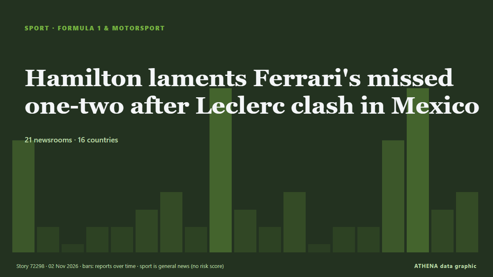

Hamilton laments Ferrari's missed one-two after Leclerc clash in Mexico

Charles Leclerc clocked a best lap time in 1min and 18.128sec to outpace Kimi Antonelli by 0.659sec in the opening free practice of the Mexico City Grand Prix. von Free Malaysia Today
Unabhängig gemeldet von 21 Medien in 16 Ländern seit dem 30. Okt., zuerst von Free Malaysia Today; die Berichterstattung breitet sich weiter aus. Sport und Kultur werden ohne Risikobewertung abgelegt. Die Konfidenz liegt bei 91 % (hoch): 21 Medien bestätigen es unabhängig, bei einer mittleren Verlässlichkeit der Quellen von 73 %. Medien nach Land: Vereinigte Staaten (13), Vereinigtes Königreich (10), Malaysia (2). Berichterstattung: 30. Okt. bis 1. Nov., 49 Stunden.
Was sich geändert hat: 25 neue Berichte von 13 Redaktionen in den 24 Stunden bis 2. Nov..
Erste Schlagzeile: F1 Mexico GP: Charles Leclerc pips McLaren and Mercedes to top FP2
Schlagzeilen werden auf Englisch angezeigt, wie veröffentlicht.
Auf einen Blick
Ausgewählt, bewertet und geschrieben nach der veröffentlichten Methodik von ATHENA. Kein Redakteur greift in einzelne Ereignisse ein. So entsteht ATHENA ›
| 30 Oct 22:12 UTC | 6 |
|---|---|
| 31 Oct 01:12 UTC | 1 |
| 31 Oct 04:12 UTC | 0 |
| 31 Oct 07:12 UTC | 1 |
| 31 Oct 10:12 UTC | 1 |
| 31 Oct 13:12 UTC | 2 |
| 31 Oct 16:12 UTC | 3 |
| 31 Oct 19:12 UTC | 1 |
| 31 Oct 22:12 UTC | 9 |
| 01 Nov 01:12 UTC | 2 |
| 01 Nov 04:12 UTC | 1 |
| 01 Nov 07:12 UTC | 3 |
| 01 Nov 10:12 UTC | 0 |
| 01 Nov 13:12 UTC | 1 |
| 01 Nov 16:12 UTC | 1 |
| 01 Nov 19:12 UTC | 6 |
| 01 Nov 22:12 UTC | 9 |
| 02 Nov 01:12 UTC | 2 |
| 02 Nov 04:12 UTC | 3 |
Warum diese Zahlen
Bedeutung
Risiko
Konfidenz
Die Berichterstattung – wer berichtete, und wann
Schlagzeile wie veröffentlicht · öffnet das Original- Free Malaysia Today · MalaysiaLeclerc shows practice pace as Antonelli prowls in Mexico
- New Straits Times · MalaysiaLeclerc shows practice pace as Antonelli prowls in Mexico
- Motorsport.com · Vereinigte StaatenF1 Mexico GP: Charles Leclerc pips McLaren and Mercedes to top FP2
- Sky Sports · Vereinigtes KönigreichMexico City Grand Prix - Practice highlights
- Sky Sports · Vereinigtes KönigreichLeclerc seals Mexico City practice double as Hamilton suffers technical issue
- Motorsport.com · Vereinigte StaatenF1 Mexico GP: Saturday schedule, weather forecast and how to watch
- ABC News Australia · AustralienFerrari fastest as Verstappen says Kiwi rival should 'act a little smarter'
- Asharq Al-Awsat (English) · Saudi-ArabienLeclerc Quickest in Mexico GP Practice
- Türkiye Today · TürkeiCharles Leclerc tops Mexico City GP practice as Kimi Antonelli closes in on F1 title
- Motorsport.com · Vereinigte StaatenFerrari downplays expectations for F1 Mexico GP despite blistering Friday
- Cyprus Mail · ZypernFerrari’s Leclerc fastest in both Mexico practice sessions
- Sky Sports · Vereinigtes KönigreichNorris pips Antonelli in final practice to set up thrilling Mexico qualifying
- Motorsport.com · Vereinigte StaatenF1 Mexico GP: Lando Norris tops final practice by 0.001s from Kimi Antonelli
- CNA (Channel NewsAsia) · SingapurNorris fastest in Mexico City practice ahead of Antonelli
- Sky Sports · Vereinigtes KönigreichHamilton: A dream to emulate Schumacher with first Ferrari pole
- Motorsport.com · Vereinigte StaatenF1 Mexico GP: Lewis Hamilton beats George Russell and Charles Leclerc to pole
- Jamaica Observer · JamaikaHamilton grabs pole position for Mexican Grand Prix
- Motorsport.com · Vereinigte Staaten"Up there for pole": Max Verstappen rues Turn 13 traffic in F1 Mexico GP qualifying
- Motorsport.com · Vereinigte StaatenF1 Mexico GP: Sunday schedule, weather forecast and how to watch
- Sky Sports · Vereinigtes KönigreichHamilton analyses first Ferrari pole lap at the SkyPad!
- Motorsport.com · Vereinigte StaatenGeorge Russell identifies costly decision behind Mexican GP qualifying near-miss
- Motorsport.com · Vereinigte StaatenCharles Leclerc reveals Mexican GP overtaking fears after missing out on pole
- Arab News · Saudi-ArabienLewis Hamilton wins pole for Ferrari at the Mexico City Grand Prix
- CNA (Channel NewsAsia) · SingapurHamilton recalls Schumacher after first Ferrari pole, hails Antonelli
- Oman Observer · OmanHamilton takes first proper pole for Ferrari
- Jamaica Observer · JamaikaHamilton takes record 105th pole and first for Ferrari as Antonelli lurks
- Tuoi Tre News · VietnamNorris fastest ahead of Antonelli in final Mexico practice
- Al Jazeera English · KatarF1: Hamilton takes first Ferrari pole; Antonelli starts fourth in Mexico
- Gulf News · Vereinigte Arabische EmirateHamilton reflects on Schumacher memories after Ferrari pole in Mexico
- News of Bahrain · BahrainHamilton Makes Ferrari History in Mexico
- Sky Sports · Vereinigtes KönigreichAntonelli crowned world champion as Verstappen wins wild Mexico City GP
- Sky Sports · Vereinigtes KönigreichCHAOS on opening lap as Leclerc gets penalty after overtaking Hamilton
- Motorsport.com · Vereinigte StaatenCharles Leclerc's Mexico GP penalty leaves F1 fans furious for very different reasons
- Motorsport.com · Vereinigte StaatenWhy Charles Leclerc only got a five-second penalty in F1 Mexico GP
- Sydney Morning Herald · AustralienFerrari teammates clash on lap one
- The Race · Vereinigtes KönigreichFIA explains controversial Leclerc penalty decision
- Sky Sports · Vereinigtes KönigreichHamilton collides with Verstappen in DRAMATIC race restart!
- Sky Sports · Vereinigtes KönigreichHamilton hits out at Leclerc after Mexico clash
- Motorsport.com · Vereinigte StaatenF1 Mexico GP: Kimi Antonelli clinches world title as Max Verstappen holds off Lewis Hamilton for victory
- Motorsport.com · Vereinigte StaatenLewis Hamilton says Ferrari needs “serious talks” after Charles Leclerc clash cost Mexico GP win